This is a theory manual for Aerodynamics and Stability & Control (SnC) analysis inside CADE-MDA.
It is written by referring to the books:
[1] Fundamentals of Aerodynamics by John D. Anderson
[2] Aircraft Design: A Conceptual Approach by Daniel P.Raymer
[3] USAF Stability and Control DATCOM Theory Manual
[4] “The Effect of Flat Plate Theory Assumption in Post-Stall Lift and Drag Coefficients Extrapolation with Viterna Method”, Faisal Mahmuddin, Journal of Subsea and Offshore, Science and Engineering, Vol. 6, 2016
[5] Software for Aerodynamics and Aircraft Design (W.H. Mason, VirginiaTech)
[6] Flávio Silvestre, Mauricio V. Donadon and Alessandro Guimarães, “A Finite Element Model for Aeroelastic Analysis of Elongated Composite Plate-Like Wings”, Gefferson Silva, January 2019
[7] “INTRODUCTION TO THE AERODYNAMICS OF FLIGHT”, Theodore A. Talay, Langley Research Center, 1975
[8] “Aerodynamics for engineering students Chapter 7 - Wing Theory”, E.L. Houghton, P.W. Carpenter, Steven H. Collicott, Daniel T. Valentine
[10] Theoretical and Experimental Power From Large Horizontal-Axis Wind Turbines. Cleveland: NASA Technical Report No. DOE/NASA/20320-41; Viterna LA, Janetzke DC, 1982.
Viterna LA, Janetzke DC.
[11] USAF Stability and control DATCOM theory manual
[12] FRICTION - from the Virginia Tech Aerodynamics and Design Software Collection
The Aerodynamics and Stability & Control (SnC) module provides a comprehensive evaluation of an aircraft’s aerodynamic performance as well as its stability and control characteristics. It integrates methods such as potential flow analysis (using VLM), airfoil performance prediction (via X-FOIL and JavaFoil), and high angle-of-attack extrapolation (using the Viterna and flat plate methods) to ensure that critical aerodynamic parameters are computed accurately and passed on to other design modules.
The objective of the aircraft aerodynamics and stability & control analysis is to accurately calculate and predict the aircraft’s aerodynamic characteristics as well as the flight stability and control characteristics.
Interface with other modules
Calculate aerodynamic forces and moments
Calculate stability and control parameters of aircraft
Deliver the required aerodynamic parameters to other analysis modules
The aerodynamic analysis in this software is divided into Low Angle of Attack and High Angle of Attack sections to accurately model extensive flight envelope of Urban Air Mobility aircraft. Unlike conventional airplanes, a UAM’s mission profile includes vertical takeoff, transition to forward flight, cruise, and vertical landing, as shown in the mission profile diagram. This requires a comprehensive analysis over a much wider range of angles of attack than a traditional aircraft.
This section is critical for modeling the unique operational phases of UAM aircraft, such as vertical takeoff, landing, and the transition phase between hover and forward flight.
By splitting the analysis, we use the most appropriate tool for each flight condition, ensuring a comprehensive and accurate aerodynamic model across the UAM’s entire operational envelope.
In CADE-MDA Aerodynamic Analysis Module, AVL Program is used to perform VLM analysis. However, since the AVL program neglects viscous effects, the parasite drag coefficient \((C_{D_0})\) must be provided separately. To account for the viscous drag effects-specifically, skin friction and form drag that are not captured by inviscid methods such as VLM, Friction2k method (based on the FRICTION code by Virginia Tech) is used. It computes \((C_{D_0})\) each component wise, using flat-plate skin friction formulas and empirical form factors.
is used to estimate the parasite drag (arising from skin friction and form drag) which are not captured by inviscid methods such as VLM. The friction2K method is then employed to calculate the parasite drag coefficient \((C_{D_0})\) for each aircraft component.
Friction2K provides an estimate the parasite coefficient \((C_{D_0})\), which was developed by Professor W. H. Mason at Virginia Tech as part of the Applied Computational Aerodynamics curriculum.
It is designed to provide a rapid and reasonably accurate estimation of parasite drag during the preliminary design phase of aircraft development, particularly for speeds up to approximately Mach 3.
Reference Area \(( S_{ref} )\)
→ The area of the trapezoidal reference wing planform.
Wetted Area \(( S_{wetted} )\)
→ The total external surface area of the component that would be wet if the aircraft were submerged in water.
Unlike \(S_{ref}\), which is a 2D planform areas, \(S_{wetted}\) is a 3D surface area.
Trim analysis is performed with AVL program following trim condition:
Operating Variables
Angle of Attack(\(\alpha\)), Side-Slip Angle(\(\beta\))
Wingstrip analysis and empirical-based analysis requires aerodynamic analysis data of the airfoil. Airfoil Analysis is focused on predicting the aerodynamic performance (lift, drag, and moment coefficients) of the airfoil.
Two primary tools are used : X-FOIL and JavaFoil.
In order to perform wing strip analysis and empirical-based aerodynamic estimation,
accurate aerodynamic data of the airfoil is required. The airfoil analysis focuses on estimating the aerodynamic performance,
including lift coefficient\((C_l)\), drag coefficient\((C_d)\), and pitching moment coefficient\((C_m)\),
as functions of angle of attack and flow conditions.
XFOIL is a subsonic airfoil design and analysis tool developed by Mark Drela at MIT, written in FORTRAN. It employs a linear-strength panel method to solve potential flow, combined with a boundary layer solver to include viscous effects.
XFOIL is capable of predicting aerodynamic performance up to and slightly beyond the maximum lift coefficient (\(C_{L_{max}}\))
under subsonic conditions.
The main features are as follows :
Viscous or inviscid analysis of specified airfoil shapes
Options for free or forced transition along the surface
Prediction of laminar separation bubbles (also called transitional separation bubbles)
Handling of limited trailing-edge boundary layer separation
Compressibility correction using Karman-Tsien method for moderate subsonic \((M)\)
Analysis with fixed or varying Reynolds number\((Re)\) and/or Mach number\((M)\)
JavaFoil is a Java-based panel method tool for 2D airfoil analysis.
Although less comprehensive in boundary layer modeling compared to XFOIL, it is widely used for educational and conceptual design purposes.
Key features include:
Geometric definition and visualization of airfoil shapes
Inviscid potential flow solution using vortex panels
Viscous correction using integral boundary layer equations
Fast \((C_l)\), \((C_d)\), \((C_m)\) computation for varying angles of attack
JavaFoil is particularly useful when lightweight, platform-independent analysis is required during preliminary design.
Low Angle-of-Attack analysis targets the linear aerodynamic regime where the wing operates at low angles of attack. It primarily involves VLM analysis and lift curve plotting.
Aero-VLM Analysis uses the AVL program to calculate the lift distribution, induced drag, and fundamental stability derivatives by representing the wing as an assembly of horseshoe vortices.
Since AVL is based on inviscid potential flow, it cannot directly calculate parasite drag (\(CD_0\)). Therefore, the friction2K program is used separately to estimate the \(CD_0\) value. This value is then integrated with the VLM analysis results to determine the aircraft’s total drag.
Biot-Savart Law
Each vortex line of a certain circulation induces a velocity field
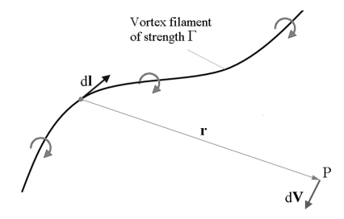
Biot Savart Law
\[ V = \frac{\Gamma}{4\pi} \int \frac{d\mathbf{l} \times \mathbf{r}}{|\mathbf{r}|^3} \]
Where,
- \(dl\) : Infinitely small part of the filament\([m]\) - \(r\) : Radius from point P to the point on the filament\([m]\) - \(V\) : Induced velocity\([m/s]\) - \({\Gamma}\) : Strength of the vortex (Circulation) \([m^2/s]\)
Kutta-Joukovsky Theorem
A vortex of certain circulation moving with velocity V experiences force. It is a bound vortex fixed within the flow of velocity \(V_{\infty}\) that produces lift.
\[ L = {\rho}V_{\infty}{\Gamma} \]
Where,
- \(L\) : Lift - \(V_{\infty}\) : Freestream velocity - \({\rho}\) : Air density
Hermann von Helmholtz Theory
This describes principles of vortex filament behaviour. It must form a close path like vortex ring. Circulation along one vortex filament is constant.
Prandtl Lifting-Line Theory
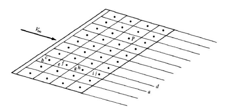
Vortex Lattice System
Horseshoe vortex idea comes from this theory. A surface of a wing is divided into panels in spanwise and chordwise. On each of the panels there is as horseshoe vortex like below figure. There are as many horseshoe vortices as there are panels, each of its own constant circulation. To get the whole aerodynamic force, contribution from all the panels must be summarized.
Lift Curve Plot method is based on AVL Program and USAF Digital DATCOM’s method. To draw a lift coefficient curve graph, we need to know the following values :
The lift coefficient curve for the entire aircraft is estimated using the method proposed by Raymer. This method utilizes the lift curve slope for the whole aircraft, derived from a AVL program, and the aerodynamic coefficient information of the airfoil, derived from the X-foil program.
However, to compute the maximum lift coefficient, the lift curve slope of each individual wing is required. In subsonic conditions (\(Re=1×10^6\), \(M<0.3\)), the wing lift curve slope is calculated using the following equation.
Exposed Area(\(S_{exposed}\)) : The area of the wing that is actually exposed outside of the fuselage.
In above equation, the airfoil’s lift curve slope is required. To calculate these values, the aerodynamic coefficients for each angle of attack are obtained using the X-FOIL program, and then these coefficients are used to calculate the airfoil’s lift curve slope.
Maximum Lift Coefficient(\(C_{L_{max}}\)) and AOA at Maximum Lift Coefficient(\(\alpha_{C_{L_{max}}}\)) Calculation
The maximum lift coefficient and the corresponding angle of attack are determined using empirical methods (e.g., DATCOM), with different formulations applied for high and low aspect ratio wings.
- \(A\) : Aspect ratio - \({C_{l_{max}}}\) : Airfoil’s maximum lift coefficient at M=0.2 - \(\Delta {C_{L_{max}}}\) : Increment in maximum lift coefficient
\({C_{l_{max}}}\) is calculated using the aerodynamic coefficients for each angle of attack obtained from the X-FOIL program. \({C_{L_{max}}}/{C_{l_{max}}}\) is calculated by using following equation :
\[ \frac{C_{L_{max}}}{C_{l_{max}}} = A - B \cdot \Delta y' \]
- \(\Delta y\) : Airfoil’s leading edge sharpness parameter
This parameter is derived from the configuration module, and this parameter is represented as shown in the figure
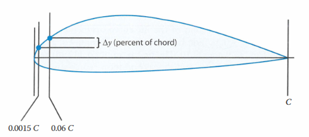
Leading Edge Sharpness Parameter
\(\Delta {C_{L_{max}}}\) depends on leading edge sweep angle (\({\Lambda_{LE}}\)), Mach Number (M) and airfoil’s Leading Edge Sharpness Parameter (\({\Delta}y\)). The value derived from following figure :
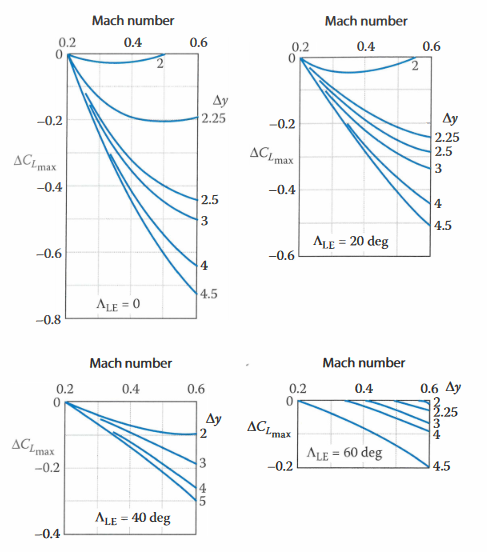
Mach Number Correction
The angle of attack at maximum lift coefficient is derived from follwing equation :
- \({\alpha_{L=0}}\) : Zero lift angle of attack\([\text{deg}]\) - \(\Delta {\alpha_{max}}\) : Increment in maximum lift angle of attack
\({\alpha_{L=0}}\) is calculated using the aerodynamic coefficients for each angle of attack obtained from the X-FOIL program. For \(\Delta {\alpha_{max}}\), this value depends on leading edge sweep (\({\Lambda_{LE}}\)) and airfoil’s leading edge sharpness parameter (\({\Delta}y\)). This value derived from following figure.
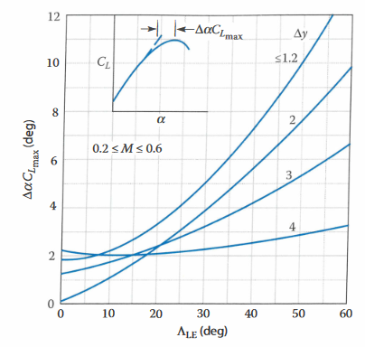
Increment in AOA at Subsonic High Aspect Ratio
Low Aspect Ratio Method
\[ A < {A_{LOW}} \]
In this case, maximum lift coefficient (\(C_{L_{max}}\)) is
derived from following equation.
\({({C_{L_{max}}})_{base}}\) depends on correction factor \({C_1}\), \({C_2}\), Aspect Ratio \(A\), leading edge sweep \(\Lambda_{LE}\), airfoil’s Leading Edge Sharpness Parameter (\(\Delta y\)) and
\(\beta = \sqrt {1-M^2}\). This value is derived from following figure :
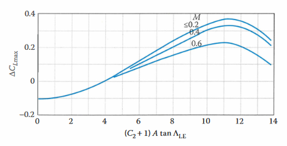
Increment in AOA at Subsonic Low Aspect Ratio
In figure, \({C_2}\) is expressed from taper ratio’s function and is derived from following figure :
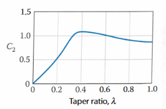
Taper Ratio Correction Factor at Low Aspect Ratio
The angle of attack at maximum lift coefficient is
\({(\alpha_{max})_{base}}\) depends on correction factor \({C_1}\), Aspect ratio \(A\), factor \(\beta\), leading edge sweep \(\Lambda_{LE}\). This value is derived from following figure :
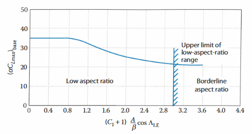
AOA at Maximum Lift Coefficient for Low Aspect Ratio
\(\Delta {\alpha_{max}}\) depends on correction factor \({C_2}\), Aspect ratio \(A\), leading edge sweep \(\Lambda_{LE}\), taper ratio \(\lambda\) and Mach number \(M\). This value is derived from following figure :
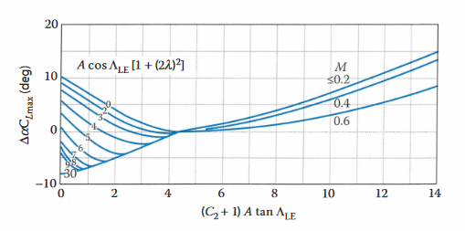
Increment in AOA at Subsonic Low Aspect Ratio
Maximum lift coefficient of aircraft is obtained by sum of wing’s maximum lift coefficient and increment of tail’s maximum lift coefficient.
- \({(C_{L_{max}})_w}\) : Maximum lift coefficient for main wing - \({(\Delta {C_{L_{max}}})_T}\) : Increment in maximum lift coefficient due to tail wing
Increment of tail’s maximum lift coefficient \({(\Delta {C_{L_{max}}})_T}\) is derived from following equation :
A complete lift curve is generated by combining the linear (pre-stall) and non-linear (post-stall) segments, ensuring a smooth transition through the entire range of angles of attack.
Derive lift curve slope \({C_{L_{\alpha}}}\) of aircraft at flight
Condition where you want to derive such as cruise condition.
In here, this value is derived from AVL result.
Estimate zero lift angle of attack (\(\alpha_{L=0}\)).
For conceptual design process, this is estimated from airfoil’s
zero lift angle of attack.
Find the angle of attack at the end of linear region (\(\alpha ^{\star}\)).
Next, draw a straight line between \(\alpha_{L=0}\) and \(\alpha ^{\star}\)
which slope is \({C_{L_{\alpha}}}\).
\(\alpha ^{\star}\) is estimated from airfoil’s linear end angle of attack.
Derive maximum lift coefficient \({C_{L_{max}}}\) and angle of attack
at that \({\alpha_{max}}\). This segment is non-linear, so curve fit
between \(\alpha ^{\star}\) and \({\alpha_{max}}\) so that the lift
curve is smooth.
Aerodynamic Wing Strip Analysis is conducted using the HETLAS (Helicopter Trim, Linearization, and Simulation) program’s wing module. HETLAS program is written in Fortran code.
The HETLAS program’s wing module is based on wing strip theory and has the following features :
Wing modeling (considering sweep, twist, etc.)
Slices the wing in the span direction
The wing is divided into multiple sections as shown in the following figure, and each section is analyzed individually.
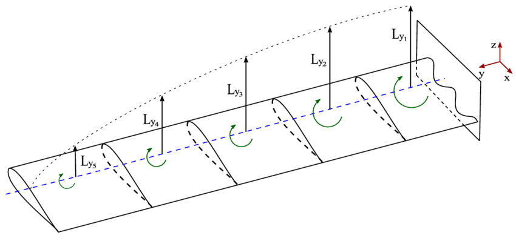
Wing Strip Model
Calculates induced velocity for each node of the sliced wing
The induced velocity is calculated for each node, and as shown in the following figure, the effective velocity, effective angle of attack, and induced angle of attack for each node can be determined using the induced velocity and free stream velocity. Using these parameters, the lift and drag acting on each node can be calculated.
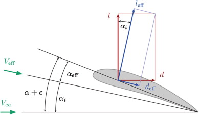
Induced Velocity
Where,
- \(l_{eff}\) : Local effective lift - \(d_{eff}\) : Local effective drag - \({\alpha}_i\) : Induced angle of attack - \({\alpha}_{eff}\) : Effective angle of attack - \(V_{eff}\) : Effective velocity
Performs vortex calculations for each node of the sliced wing (iterations performed)
The vortex is categorized into bound vortex, tip vortex, and starting vortex, as shown in the figure below. In this program, the core radius of the bound vortex is set to 0.1, the core radius of the tip vortex is set to 0.01, and the core radius of the free vortex width is set to 2.1 by default.
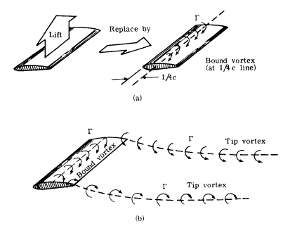
Wing Vortex System
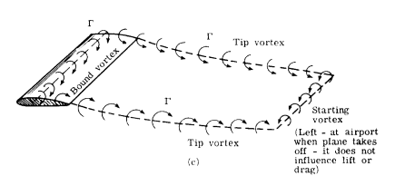
Wing Vortex System
Transforms the Aerodynamic Center at each node to the overall wing Aerodynamic Center
Uses Biot-Savart vortex
The Biot-Savart law originally described the relationship between the strength of an electric current and the resulting magnetic field in electromagnetism. In fluid dynamics, velocity and vorticity (circulation) correspond to magnetic field strength and electric current, respectively, with vortex filaments replacing conductors. Therefore, the Biot-Savart law can be interpreted as describing the relationship between the velocity induced by a vortex filament and the strength (circulation) of that filament.
Each vortex line of certain circulation induce velocity field
- \(dl\) : Infinitely small part of the filament\([𝑚]\) - \(r\) : Radius from point P to the point on the filament\([𝑚]\) - \(V\) : Induced velocity\([m/s]\) - \({\Gamma}\) : Strength of the vortex (Circulation)\([m^2/s]\)
Reads airfoil lookup tables to calculate Lift, Drag, Moment, etc.
The HETLAS program’s wing module analyze each wing strip as an airfoil, reading the aerodynamic lookup table for the airfoil to calculate lift, drag, moment.
Control surface model
In the wing module of the HETLAS program, analysis of control surface deflection is also possible, providing methods such as Wolowicz, Torenbeek, and DATCOM. In this program, the default method for calculation is set to the DATCOM method.
As previously mentioned, the wing module of the HETLAS program uses the aerodynamic coefficient look up table as input. The aerodynamic coefficients of the airfoil are obtained from lookup tables generated by the X-FOIL analysis program developed by MIT and are used as input for the HETLAS program.
X-FOIL is a program initially developed by Mark Drela at MIT and written in the FORTRAN language. X-FOIL is a program for the design and analysis of subsonic airfoils. Given the coordinates specifying the configuration of a 2D airfoil, Reynolds number, and Mach number, X-FOIL can calculate the pressure distribution on the airfoil and hence determine the lift and drag characteristics.
This module is designed for full-range aerodynamic analysis, capable of predicting aerodynamic coefficients over the entire angle-of-attack range, including the high angle-of-attack region where nonlinear effects become significant.
The Viterna method extrapolates \(C_{L}\) and $C_{D} curves into the high-angle-of-attack region by fitting a simple trigonometric empirical model to pre-stall XFOIL data. It skips detailed pressure and skin-friction integrations, relies only on stall data, and provides a rapid first-order estimate.
Procedure :
Run the X-FOIL program for the airfoil of the wing to be analyzed.
Analyze the aerodynamic information of the airfoil from the X-FOIL analysis results.
- \({(x/c)_m}\) : Chordwise location of the airfoil maximum thickness point - \(\frac{t}{c}\) : Thickness to chord ratio - \(M\) : Mach number - \(\Lambda_{max}\) : Sweep of the maximum-thickness line
In this part, the whole range aero database like aerodynamic forces and coefficients (\(C_L, C_D, C_X, C_Y, C_Z, C_l, C_m, C_n\)) is obtained from flat plate method.
In normal flat plate theory, one plate’s lift coefficient (\({C_L}\))
and drag coefficient (\({C_D}\)) are derived from following equation :
\[ C_L = 2 \sin{\alpha}\cos{\alpha} \]
\[ C_D = 2 \sin^2{\alpha} \]
Using these equations, We calculate whole range analysis including whole angle of attack and side slip angle for total aircraft. When analysing the entire aircraft, it is calculated by considering only the wings and dividing them into two cases.
And also here, \(C_L, C_D\) are calculated in wind axis and \(C_X,C_Y,C_Z,C_l, C_m, C_n\) are calculated in body axis.
Where,
- \(C_L\) : Lift coefficient - \(C_D\) : Drag coefficient - \(C_{D_0}\) : Parasite drag coefficient - \(C_X, C_Y, C_Z\) : X, Y, Z-direction force coefficient - \(C_l\) : Rolling moment coefficient - \(C_m\) : Pitching moment coefficient - \(C_n\) : Yawing moment coefficient
Conventional type means horizontal wing like conventional aircraft’s main wing or horizontal tail. The equation for calculating the aerodynamic coefficient for the horizontal wing is as follows :
- STA (stations) : Position in the x-axis direction, based on the wing’s mean aerodynamic center - BL (Buttock Line) : Position in the y-axis direction, based on each wing’s mean aerodynamic center - WL (Water Line) : Position in the z-axis direction, based on wing’s height - \({S_n}\) : Area of each wing - \(\alpha\) : Angle of attack - \(\beta\) : Side-slip angle
Vertical type means vertical wing like conventional aircraft’s vertical tail. The equation for calculating the aerodynamic coefficient for the vertical wing is as follows.
For configurations combining horizontal and vertical effects (e.g., V-Tail, dihedral wings), the aerodynamic coefficients are computed as a weighted sum of the conventional and vertical types.
In the three types above, all of the wing configurations can be expressed. After calculating the aerodynamic coefficient for each wing, the final static aerodynamic coefficient can be obtained as shown in below equation.